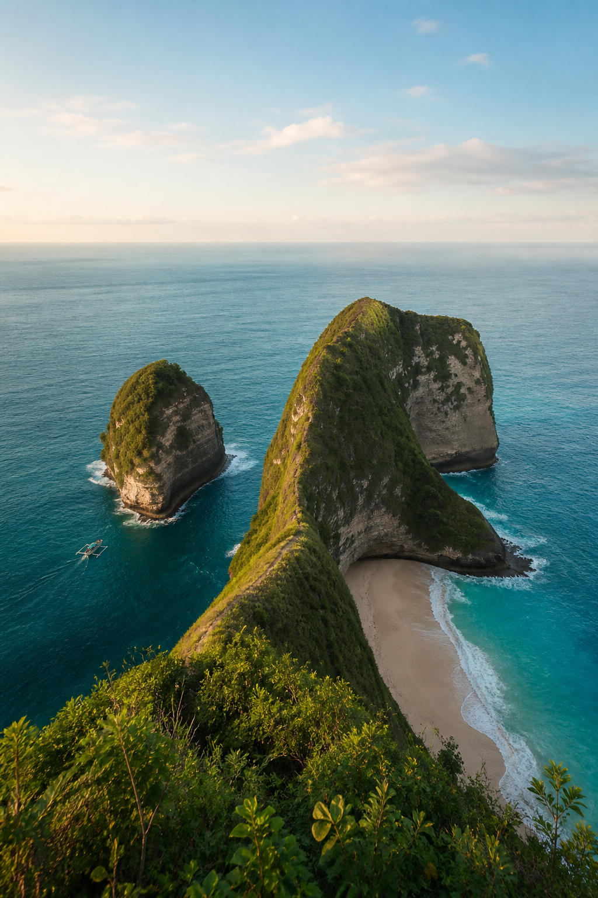

Bidesh and BeyondPre-Travel Guide
Indonesia · Island Edition
Bali &
Nusa Penida
A considered guide for the Island of the Gods
15 — 23 August 2026 · 7 Nights / 8 Days
The Itinerary I of four

Sunny, humid and warm. Pack light layers for the Kecak performance after sunset.
Cooler and occasionally misty around Ulun Danu and Kintamani; bring a thin jacket.
Dry, sunny and breezy. Sea conditions can affect speedboats and snorkelling plans.
Ideal for a spa, cafés, beach clubs or pool time; use high-SPF sun protection.
Climate guidance reflects August norms and the 2026 dry-season outlook. Daily marine and weather conditions may change; follow the trip manager and operator instructions.
All group visas have been applied for online. Indian passport holders are eligible for Indonesia’s e-VoA / VoA visitor route; carry the issued approval and ensure the passport has at least six months’ validity.
Bali uses WITA (UTC+8), which is 2 hours 30 minutes ahead of IST. Bahasa Indonesia and Balinese are local languages; English is common in tourist areas.
Type C/F, 230V sockets are common. Currency is Indonesian rupiah (IDR). Use authorised money changers and cards where accepted.
As this is a two-night stay, keep island essentials accessible for the boat transfer: medicines, swimwear, a change of clothes, toiletries and protected electronics.
Entry requirements and fees can change. This guide reflects official information checked in August 2026; follow the final visa confirmation and instructions from your trip manager.